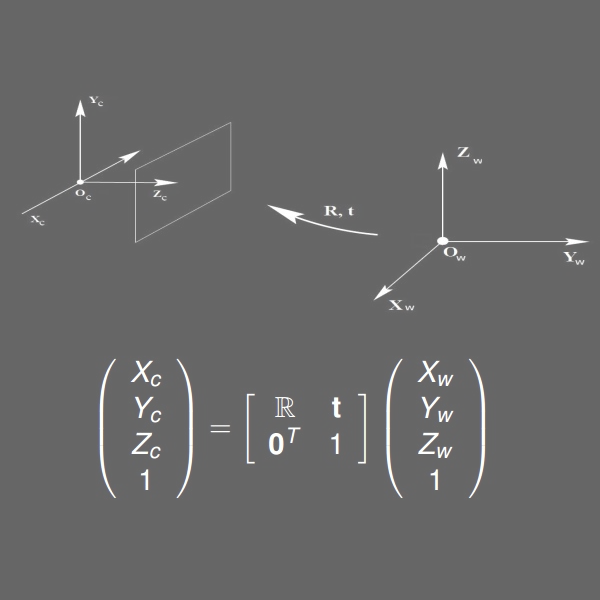

A Scene, a Camera and a Renderer Walk Into A Euclidean Space...
WTF - What's The Frustom?
WTFFOV - What's The Frustom Field of View?
What's The Vector Victor?
Euler Angles (Pronounced 'oi-ler') to Bring Order to Rotation.
Tweens Are So ADD, They Just Keep Moving.
The Coolest Distance Between Two Points is a Curved Spline.
As Far as I'm Concerned The Only Way to See The Matrix is Projected
